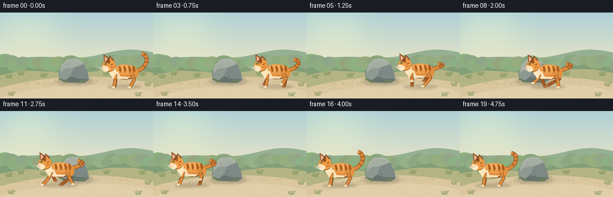
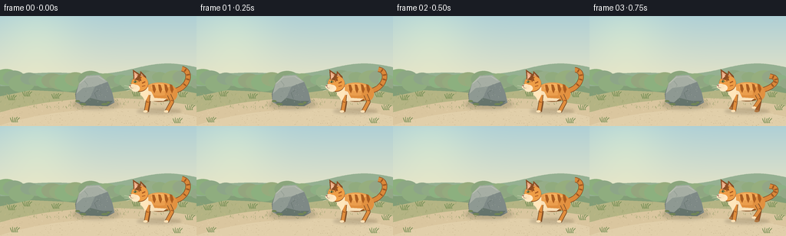

CODING AGENTS AS PIXEL WORLD MODELS
traex/GPT-6.1-Sol · dynamic_spatial_relationship_0009
点击播放 · 原生 RGB 像素
逐轮保存的候选
回放视频、检查图与代码变化。
每份候选均可单独播放。实际图片检查记录在下方工具轨迹中。
候选 01播放与检查图
点击播放 · 原生 RGB 像素


展开代码变化
--- 上一保存版本
+++ 本次保存版本
@@ -0,0 +1,185 @@
+from pathlib import Path
+import math
+import numpy as np
+from PIL import Image, ImageDraw, ImageFilter
+import artifact_io
+
+ROOT = Path(__file__).resolve().parent
+W,H,S = 256,144,4
+
+def bez(points, n=32):
+ out=[]
+ for t in np.linspace(0,1,n):
+ if len(points)==4:
+ a,b,c,d=points
+ out.append(((1-t)**3*a[0]+3*(1-t)**2*t*b[0]+3*(1-t)*t*t*c[0]+t**3*d[0],(1-t)**3*a[1]+3*(1-t)**2*t*b[1]+3*(1-t)*t*t*c[1]+t**3*d[1]))
+ else:
+ a,b,c=points
+ out.append(((1-t)**2*a[0]+2*(1-t)*t*b[0]+t*t*c[0],(1-t)**2*a[1]+2*(1-t)*t*b[1]+t*t*c[1]))
+ return out
+
+def poly(d,p,c): d.polygon([(round(x*S),round(y*S)) for x,y in p],fill=c)
+def line(d,p,c,w=1): d.line([(round(x*S),round(y*S)) for x,y in p],fill=c,width=max(1,round(w*S)),joint='curve')
+def ellipse(d,b,c): d.ellipse(tuple(round(z*S) for z in b),fill=c)
+
+def background():
+ yy,xx=np.mgrid[0:H*S,0:W*S]; yf=yy/S
+ top=np.array([175,208,214]); bot=np.array([242,232,195]); f=np.clip(yf/105,0,1)[...,None]
+ arr=top*(1-f)+bot*f
+ sun=np.exp(-((xx/S-48)**2+(yf-22)**2)/(2*38**2))[...,None]
+ arr=np.clip(arr+sun*np.array([15,12,0]),0,255).astype('uint8')
+ im=Image.fromarray(arr); d=ImageDraw.Draw(im)
+ # distant softly layered meadow
+ poly(d,[(0,75)]+[(x,71+6*math.sin(x/47)+3*math.cos(x/23)) for x in range(257)]+[(256,144),(0,144)],(149,176,146))
+ poly(d,[(0,90)]+[(x,85+7*math.sin(x/65+1.8)) for x in range(257)]+[(256,144),(0,144)],(130,158,119))
+ # out-of-focus hedges and woodland at the edge of the clearing
+ rng=np.random.default_rng(16)
+ for x in range(-12,277,10):
+ r=rng.uniform(8,17); y=rng.uniform(79,88)
+ ellipse(d,(x-r,y-r*.65,x+r,y+r*.7),(139+int(rng.integers(0,13)),165+int(rng.integers(0,13)),125+int(rng.integers(0,12))))
+ poly(d,[(0,105),(40,97),(85,99),(123,103),(183,95),(223,95),(256,101),(256,144),(0,144)],(180,180,132))
+ # warm sandy path curves through the field
+ poly(d,[(0,126)]+bez([(0,126),(95,100),(185,105),(256,118)])+[(256,144),(0,144)],(218,198,159))
+ poly(d,bez([(0,143),(80,117),(193,115),(256,132)])+[(256,144),(0,144)],(225,207,170))
+ for i in range(610):
+ x=rng.uniform(0,256); y=rng.uniform(102,144)
+ if y<118+5*math.sin(x/60):
+ col=[(153,160,110),(166,170,116),(191,185,133)][i%3]
+ line(d,[(x,y),(x+rng.uniform(-2,2),y-rng.uniform(1,3))],col,.5)
+ else:
+ col=[(199,180,143),(233,214,179),(211,191,153)][i%3]
+ ellipse(d,(x,y,x+rng.uniform(.3,1.3),y+.35),col)
+ # background grass clusters; no competing moving subjects
+ for x,y in [(12,110),(32,105),(70,108),(175,105),(235,106),(244,123),(16,139),(228,140)]:
+ for j in range(5):
+ dx=j*1.7
+ line(d,bez([(x+dx,y),(x+dx-2,y-3),(x+dx+(j-2)*1.4,y-6-j%2)]),(114,141,83),.7)
+ return im
+
+BG=background()
+
+def rock(im):
+ shadow=Image.new('RGBA',im.size); sd=ImageDraw.Draw(shadow)
+ ellipse(sd,(94,109,156,122),(56,61,49,52))
+ shadow=shadow.filter(ImageFilter.GaussianBlur(2.5*S)); im.alpha_composite(shadow)
+ d=ImageDraw.Draw(im)
+ shape=[(99,113),(98,102),(103,88),(113,78),(129,77),(140,86),(146,100),(149,113),(140,118),(109,117)]
+ poly(d,shape,(108,118,115))
+ poly(d,[(99,102),(103,88),(113,78),(129,77),(140,86),(124,92),(108,94)],(166,174,164))
+ poly(d,[(99,102),(108,94),(124,92),(117,107),(110,116),(99,113)],(142,153,146))
+ poly(d,[(124,92),(140,86),(146,100),(149,113),(133,117),(117,107)],(126,137,134))
+ poly(d,[(99,111),(110,113),(117,107),(133,111),(147,111),(140,118),(109,117)],(101,116,108))
+ line(d,[(104,88),(113,80),(128,79),(136,84)],(190,195,179),.85)
+ line(d,[(128,97),(123,101),(126,108)],(97,111,106),.6)
+ line(d,[(110,85),(114,90),(112,94)],(147,158,147),.65)
+ rng=np.random.default_rng(21)
+ for i in range(65):
+ x=rng.uniform(105,140); y=rng.uniform(87,113)
+ if (x-122)**2/20**2+(y-99)**2/17**2<1:
+ ellipse(d,(x,y,x+.45,y+.35),[(173,181,169),(105,120,111),(146,159,147)][i%3])
+ # moss patches along the foot
+ for x,y,r in [(101,111,3),(108,115,4),(136,115,4),(141,113,2)]:
+ ellipse(d,(x-r,y-1,x+r,y+1.5),(112,133,85))
+
+
+def draw_cat(im, frame):
+ # initial and final holds make the left/right relation especially legible
+ if frame<=2: u=0.
+ elif frame>=16: u=1.
+ else: u=(frame-2)/14
+ smooth=u*u*(3-2*u)
+ x=205-151*smooth
+ running=2<frame<16
+ phase=(frame-3)*1.75
+ blend=min(1,(frame-2)/2,(16-frame)/2) if running else 0
+ blend=max(0,blend)
+ cy=103 - 2.1*blend*(.5+.5*math.sin(phase*2))
+ layer=Image.new('RGBA',im.size); d=ImageDraw.Draw(layer)
+ def P(p): return [(x+a,cy+b) for a,b in p]
+ def L(p,c,w): line(d,P(p),c,w)
+ def E(b,c): ellipse(d,(x+b[0],cy+b[1],x+b[2],cy+b[3]),c)
+ def Q(p,c): poly(d,P(p),c)
+ # contact shadow, slightly changing as paws leave the ground
+ sh=Image.new('RGBA',im.size); ds=ImageDraw.Draw(sh)
+ ellipse(ds,(x-27,121,x+31,128),(76,62,40,52))
+ sh=sh.filter(ImageFilter.GaussianBlur(1.7*S)); im.alpha_composite(sh)
+ # four independent articulated legs with a readable running cycle
+ def leg(anchor,sign,far=False):
+ a=phase+(math.pi if sign<0 else 0)+(math.pi*.8 if far else 0)
+ stride=math.sin(a)*12*blend
+ lift=max(0,math.cos(a))*9*blend
+ if sign<0: # foreleg
+ knee=(anchor-1+stride*.37,11-lift*.3)
+ paw=(anchor-3+stride,22-lift)
+ else:
+ knee=(anchor+4-stride*.18,9-lift*.4)
+ paw=(anchor-3+stride,22-lift)
+ fur=(166,91,36) if far else (224,141,61)
+ outline=(122,76,38)
+ path=[(anchor,0),knee,paw]
+ L(path,outline,5.5); L(path,fur,4.1)
+ E((paw[0]-3.5,paw[1]-1.8,paw[0]+2.3,paw[1]+1.3),(174,116,63) if far else (250,224,181))
+ if not far:
+ L([(knee[0]-1.4,knee[1]-2),(knee[0]+1.5,knee[1]-1)],(173,93,32),1.2)
+ leg(-11,-1,True); leg(15,1,True)
+ # graceful curling tail, relaxing into a backward stream during the run
+ tail=bez([(20,-5),(40,-7-6*blend),(47,-31+18*blend),(32,-34+17*blend+2*math.sin(frame*.38))],45)
+ L(tail,(137,78,35),7)
+ L(tail,(218,137,58),5.5)
+ for t in [.35,.53,.7,.89]:
+ i=int(t*(len(tail)-1)); q=tail[i]; prev=tail[max(0,i-1)]; nxt=tail[min(len(tail)-1,i+1)]
+ dx=nxt[0]-prev[0]; dy=nxt[1]-prev[1]; norm=math.hypot(dx,dy)
+ L([(q[0]-dy/norm*2.1,q[1]+dx/norm*2.1),(q[0]+dy/norm*2.1,q[1]-dx/norm*2.1)],(157,87,33),1.9)
+ # body with luminous back and rounded haunch
+ E((-19,-15,25,9),(135,79,36))
+ E((-19,-16,25,7),(224,143,63))
+ E((-16,-16,21,1),(235,158,77))
+ E((-8,-14,17,-5),(244,174,91))
+ E((10,-11,26,8),(226,145,64))
+ # chest and belly markings
+ Q([(-17,-7),(-8,-4),(-4,4),(12,5),(8,8),(-10,8),(-18,2)],(249,225,185))
+ for a in [-5,3,11,18]:
+ Q([(a-2,-14),(a+1,-13),(a+3,-7),(a+1,-2),(a-1,-6)],(171,93,32))
+ leg(15,1,False); leg(-12,-1,False)
+ # cream ruff leading up to the chin
+ Q([(-20,-13),(-12,-10),(-12,1),(-16,9),(-19,3),(-22,0),(-23,-7)],(255,230,187))
+ # ears behind the profile head
+ Q([(-24,-20),(-22,-31),(-15,-24),(-14,-15)],(136,78,36))
+ Q([(-22,-23),(-21,-28),(-17,-23)],(214,155,116))
+ # head, cheek and left pointing muzzle
+ E((-34,-25,-12,-4),(144,81,38))
+ E((-33.7,-24.7,-12.2,-5),(238,157,70))
+ Q([(-31,-20),(-32,-33),(-23,-27),(-21,-18)],(139,78,36))
+ Q([(-30,-22),(-30.3,-30),(-25,-26)],(233,170,132))
+ Q([(-30,-20),(-29.5,-27),(-26,-24)],(244,186,149))
+ E((-34,-13,-23,-4),(255,232,195))
+ E((-37,-14,-27,-7),(251,226,186))
+ # tabby temple stripes and brow
+ L([(-21,-23),(-24,-20),(-24,-17)],(165,88,31),1.4)
+ L([(-16,-17),(-20,-15)],(161,83,31),1.6)
+ L([(-16,-12),(-20,-11)],(173,90,35),1.3)
+ # alert green profile eye and catchlight
+ Q([(-32,-17),(-29,-19),(-26,-17),(-29,-15.5)],(91,68,39))
+ Q([(-31.5,-17),(-29,-18.3),(-26.8,-17),(-29,-16.1)],(172,194,97))
+ E((-29.7,-18.2,-28.7,-15.8),(35,45,26))
+ E((-30.4,-18,-29.7,-17.3),(255,255,224))
+ Q([(-37,-12.2),(-34.4,-12.8),(-35.3,-10.8)],(151,89,83))
+ L([(-35.2,-10.8),(-34,-8.8),(-31.7,-9)],(113,74,45),.55)
+ # fine whiskers silhouette clearly against the meadow
+ for p in [[(-33,-10),(-43,-12)],[(-33,-9),(-43,-8)],[(-32,-8),(-40,-5)]]:
+ L(p,(244,236,210),.45)
+ L([(-9,-13),(-2,-14),(7,-14)],(254,189,111),.65)
+ im.alpha_composite(layer)
+
+
+def main():
+ frames=[]
+ for i in range(20):
+ im=BG.convert('RGBA')
+ rock(im)
+ draw_cat(im,i)
+ im=im.convert('RGB').resize((W,H),Image.Resampling.LANCZOS)
+ frames.append(np.asarray(im,dtype=np.uint8))
+ artifact_io.save(np.stack(frames),ROOT)
+
+if __name__=='__main__': main()
可观测工具轨迹
实际执行的命令与返回图片。
命令 1exit 0
/bin/bash -lc 'ls -la && cat prompt.txt && cat GENERATION_RULES.md && cat task_spec.json'
命令 2exit 0
/bin/bash -lc 'cat artifact_io.py'
命令 3exit 0
/bin/bash -lc "cat > generate.py <<'PY'
from pathlib import Path
import math
import numpy as np
from PIL import Image, ImageDraw, ImageFilter
import artifact_io
ROOT = Path(__file__).resolve().parent
W,H,S = 256,144,4
def bez(points, n=32):
out=[]
for t in np.linspace(0,1,n):
if len(points)==4:
a,b,c,d=points
out.append(((1-t)**3*a[0]+3*(1-t)**2*t*b[0]+3*(1-t)*t*t*c[0]+t**3*d[0],(1-t)**3*a[1]+3*(1-t)**2*t*b[1]+3*(1-t)*t*t*c[1]+t**3*d[1]))
else:
a,b,c=points
out.append(((1-t)**2*a[0]+2*(1-t)*t*b[0]+t*t*c[0],(1-t)**2*a[1]+2*(1-t)*t*b[1]+t*t*c[1]))
return out
def poly(d,p,c): d.polygon([(round(x*S),round(y*S)) for x,y in p],fill=c)
def line(d,p,c,w=1): d.line([(round(x*S),round(y*S)) for x,y in p],fill=c,width=max(1,round(w*S)),joint='curve')
def ellipse(d,b,c): d.ellipse(tuple(round(z*S) for z in b),fill=c)
def background():
yy,xx=np.mgrid[0:H*S,0:W*S]; yf=yy/S
top=np.array([175,208,214]); bot=np.array([242,232,195]); f=np.clip(yf/105,0,1)[...,None]
arr=top*(1-f)+bot*f
sun=np.exp(-((xx/S-48)**2+(yf-22)**2)/(2*38**2))[...,None]
arr=np.clip(arr+sun*np.array([15,12,0]),0,255).astype('uint8')
im=Image.fromarray(arr); d=ImageDraw.Draw(im)
# distant softly layered meadow
poly(d,[(0,75)]+[(x,71+6*math.sin(x/47)+3*math.cos(x/23)) for x in range(257)]+[(256,144),(0,144)],(149,176,146))
poly(d,[(0,90)]+[(x,85+7*math.sin(x/65+1.8)) for x in range(257)]+[(256,144),(0,144)],(130,158,119))
# out-of-focus hedges and woodland at the edge of the clearing
rng=np.random.default_rng(16)
for x in range(-12,277,10):
r=rng.uniform(8,17); y=rng.uniform(79,88)
ellipse(d,(x-r,y-r*.65,x+r,y+r*.7),(139+int(rng.integers(0,13)),165+int(rng.integers(0,13)),125+int(rng.integers(0,12))))
poly(d,[(0,105),(40,97),(85,99),(123,103),(183,95),(223,95),(256,101),(256,144),(0,144)],(180,180,132))
# warm sandy path curves through the field
poly(d,[(0,126)]+bez([(0,126),(95,100),(185,105),(256,118)])+[(256,144),(0,144)],(218,198,159))
poly(d,bez([(0,143),(80,117),(193,115),(256,132)])+[(256,144),(0,144)],(225,207,170))
for i in range(610):
x=rng.uniform(0,256); y=rng.uniform(102,144)
if y<118+5*math.sin(x/60):
col=[(153,160,110),(166,170,116),(191,185,133)][i%3]
line(d,[(x,y),(x+rng.uniform(-2,2),y-rng.uniform(1,3))],col,.5)
else:
col=[(199,180,143),(233,214,179),(211,191,153)][i%3]
ellipse(d,(x,y,x+rng.uniform(.3,1.3),y+.35),col)
# background grass clusters; no competing moving subjects
for x,y in [(12,110),(32,105),(70,108),(175,105),(235,106),(244,123),(16,139),(228,140)]:
for j in range(5):
dx=j*1.7
line(d,bez([(x+dx,y),(x+dx-2,y-3),(x+dx+(j-2)*1.4,y-6-j%2)]),(114,141,83),.7)
return im
BG=background()
def rock(im):
shadow=Image.new('RGBA',im.size); sd=ImageDraw.Draw(shadow)
ellipse(sd,(94,109,156,122),(56,61,49,52))
shadow=shadow.filter(ImageFilter.GaussianBlur(2.5*S)); im.alpha_composite(shadow)
d=ImageDraw.Draw(im)
shape=[(99,113),(98,102),(103,88),(113,78),(129,77),(140,86),(146,100),(149,113),(140,118),(109,117)]
poly(d,shape,(108,118,115))
poly(d,[(99,102),(103,88),(113,78),(129,77),(140,86),(124,92),(108,94)],(166,174,164))
poly(d,[(99,102),(108,94),(124,92),(117,107),(110,116),(99,113)],(142,153,146))
poly(d,[(124,92),(140,86),(146,100),(149,113),(133,117),(117,107)],(126,137,134))
poly(d,[(99,111),(110,113),(117,107),(133,111),(147,111),(140,118),(109,117)],(101,116,108))
line(d,[(104,88),(113,80),(128,79),(136,84)],(190,195,179),.85)
line(d,[(128,97),(123,101),(126,108)],(97,111,106),.6)
line(d,[(110,85),(114,90),(112,94)],(147,158,147),.65)
rng=np.random.default_rng(21)
for i in range(65):
x=rng.uniform(105,140); y=rng.uniform(87,113)
if (x-122)**2/20**2+(y-99)**2/17**2<1:
ellipse(d,(x,y,x+.45,y+.35),[(173,181,169),(105,120,111),(146,159,147)][i%3])
# moss patches along the foot
for x,y,r in [(101,111,3),(108,115,4),(136,115,4),(141,113,2)]:
ellipse(d,(x-r,y-1,x+r,y+1.5),(112,133,85))
def draw_cat(im, frame):
# initial and final holds make the left/right relation especially legible
if frame<=2: u=0.
elif frame>=16: u=1.
else: u=(frame-2)/14
smooth=u*u*(3-2*u)
x=205-151*smooth
running=2<frame<16
phase=(frame-3)*1.75
blend=min(1,(frame-2)/2,(16-frame)/2) if running else 0
blend=max(0,blend)
cy=103 - 2.1*blend*(.5+.5*math.sin(phase*2))
layer=Image.new('RGBA',im.size); d=ImageDraw.Draw(layer)
def P(p): return [(x+a,cy+b) for a,b in p]
def L(p,c,w): line(d,P(p),c,w)
def E(b,c): ellipse(d,(x+b[0],cy+b[1],x+b[2],cy+b[3]),c)
def Q(p,c): poly(d,P(p),c)
# contact shadow, slightly changing as paws leave the ground
sh=Image.new('RGBA',im.size); ds=ImageDraw.Draw(sh)
ellipse(ds,(x-27,121,x+31,128),(76,62,40,52))
sh=sh.filter(ImageFilter.GaussianBlur(1.7*S)); im.alpha_composite(sh)
# four independent articulated legs with a readable running cycle
def leg(anchor,sign,far=False):
a=phase+(math.pi if sign<0 else 0)+(math.pi*.8 if far else 0)
stride=math.sin(a)*12*blend
lift=max(0,math.cos(a))*9*blend
if sign<0: # foreleg
knee=(anchor-1+stride*.37,11-lift*.3)
paw=(anchor-3+stride,22-lift)
else:
knee=(anchor+4-stride*.18,9-lift*.4)
paw=(anchor-3+stride,22-lift)
fur=(166,91,36) if far else (224,141,61)
outline=(122,76,38)
path=[(anchor,0),knee,paw]
L(path,outline,5.5); L(path,fur,4.1)
E((paw[0]-3.5,paw[1]-1.8,paw[0]+2.3,paw[1]+1.3),(174,116,63) if far else (250,224,181))
if not far:
L([(knee[0]-1.4,knee[1]-2),(knee[0]+1.5,knee[1]-1)],(173,93,32),1.2)
leg(-11,-1,True); leg(15,1,True)
# graceful curling tail, relaxing into a backward stream during the run
tail=bez([(20,-5),(40,-7-6*blend),(47,-31+18*blend),(32,-34+17*blend+2*math.sin(frame*.38))],45)
L(tail,(137,78,35),7)
L(tail,(218,137,58),5.5)
for t in [.35,.53,.7,.89]:
i=int(t*(len(tail)-1)); q=tail[i]; prev=tail[max(0,i-1)]; nxt=tail[min(len(tail)-1,i+1)]
dx=nxt[0]-prev[0]; dy=nxt[1]-prev[1]; norm=math.hypot(dx,dy)
L([(q[0]-dy/norm*2.1,q[1]+dx/norm*2.1),(q[0]+dy/norm*2.1,q[1]-dx/norm*2.1)],(157,87,33),1.9)
# body with luminous back and rounded haunch
E((-19,-15,25,9),(135,79,36))
E((-19,-16,25,7),(224,143,63))
E((-16,-16,21,1),(235,158,77))
E((-8,-14,17,-5),(244,174,91))
E((10,-11,26,8),(226,145,64))
# chest and belly markings
Q([(-17,-7),(-8,-4),(-4,4),(12,5),(8,8),(-10,8),(-18,2)],(249,225,185))
for a in [-5,3,11,18]:
Q([(a-2,-14),(a+1,-13),(a+3,-7),(a+1,-2),(a-1,-6)],(171,93,32))
leg(15,1,False); leg(-12,-1,False)
# cream ruff leading up to the chin
Q([(-20,-13),(-12,-10),(-12,1),(-16,9),(-19,3),(-22,0),(-23,-7)],(255,230,187))
# ears behind the profile head
Q([(-24,-20),(-22,-31),(-15,-24),(-14,-15)],(136,78,36))
Q([(-22,-23),(-21,-28),(-17,-23)],(214,155,116))
# head, cheek and left pointing muzzle
E((-34,-25,-12,-4),(144,81,38))
E((-33.7,-24.7,-12.2,-5),(238,157,70))
Q([(-31,-20),(-32,-33),(-23,-27),(-21,-18)],(139,78,36))
Q([(-30,-22),(-30.3,-30),(-25,-26)],(233,170,132))
Q([(-30,-20),(-29.5,-27),(-26,-24)],(244,186,149))
E((-34,-13,-23,-4),(255,232,195))
E((-37,-14,-27,-7),(251,226,186))
# tabby temple stripes and brow
L([(-21,-23),(-24,-20),(-24,-17)],(165,88,31),1.4)
L([(-16,-17),(-20,-15)],(161,83,31),1.6)
L([(-16,-12),(-20,-11)],(173,90,35),1.3)
# alert green profile eye and catchlight
Q([(-32,-17),(-29,-19),(-26,-17),(-29,-15.5)],(91,68,39))
Q([(-31.5,-17),(-29,-18.3),(-26.8,-17),(-29,-16.1)],(172,194,97))
E((-29.7,-18.2,-28.7,-15.8),(35,45,26))
E((-30.4,-18,-29.7,-17.3),(255,255,224))
Q([(-37,-12.2),(-34.4,-12.8),(-35.3,-10.8)],(151,89,83))
L([(-35.2,-10.8),(-34,-8.8),(-31.7,-9)],(113,74,45),.55)
# fine whiskers silhouette clearly against the meadow
for p in [[(-33,-10),(-43,-12)],[(-33,-9),(-43,-8)],[(-32,-8),(-40,-5)]]:
L(p,(244,236,210),.45)
L([(-9,-13),(-2,-14),(7,-14)],(254,189,111),.65)
im.alpha_composite(layer)
def main():
frames=[]
for i in range(20):
im=BG.convert('RGBA')
rock(im)
draw_cat(im,i)
im=im.convert('RGB').resize((W,H),Image.Resampling.LANCZOS)
frames.append(np.asarray(im,dtype=np.uint8))
artifact_io.save(np.stack(frames),ROOT)
if __name__=='__main__': main()
PY
python generate.py"视觉工具实际返回图片 1

保存候选 1 份；完成命令 3 次；可验证图片返回 1 张。原始 API 响应与完整日志保留在本地。